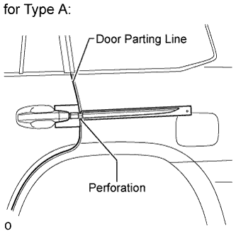
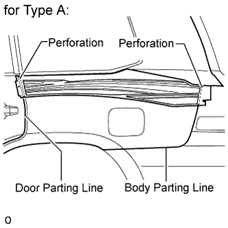
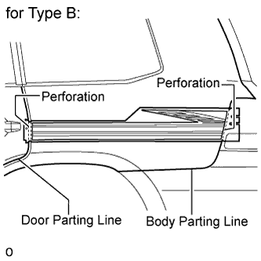
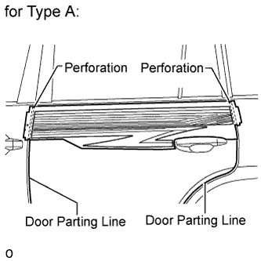
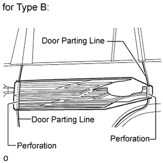
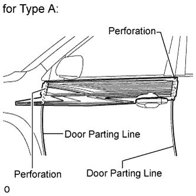
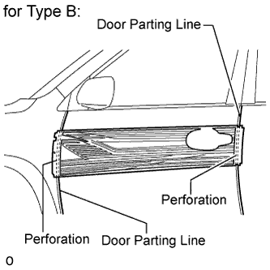
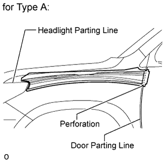
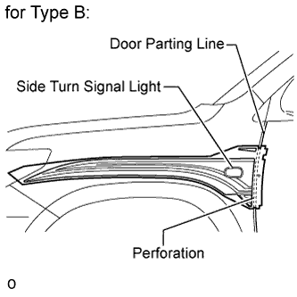

GRAPHIC DECAL > INSTALLATION |
| Item | Temperature |
| Vehicle Body | 40 to 60°C (104 to 140°F) |
| Stripe Tape | 20 to 30°C (68 to 86°F) |
| 1. REPAIR INSTRUCTION |
Clean the vehicle body surface
Using a heat light, heat the vehicle body surface.
Wipe off any tape adhesive residue with cleaner.
Installation temperature
When the ambient temperature is below 15°C (59°F), perform the installation procedure after warming the vehicle body surface (installation surface of the door frame) and tape up to between 20 and 30°C (68 and 86°F) using a heat light. When the ambient temperature is above 35°C (95°F), cool the vehicle body surface (installation surface of the door frame) and tape down to between 20 and 30°C (68 and 86°F) prior to installation.
Before installation
Make sure any dirt on and around the vehicle body surface where the tape will be installed (installation surface of the door frame) is removed, and that the surface is smooth. If the surface is rough or dirt remains when pressing the tape onto the surface, air will be trapped under the tape and result in a poor appearance.
Key points for handling the tape
The tape bends and rolls up easily. Store the tape between flat pieces of cardboard or other similar objects and keep it dry and level.
Key points for the installation of the tape (how to use a squeegee and the installation procedure for flat surfaces)
To avoid air bubbles, slightly raise the part of the tape that is going to be applied so that its adhesive surface does not touch the vehicle body while applying the tape. Tilt the squeegee at 40 to 50° (for pressing forward) or 30 to 45° (for pulling) to the vehicle body surface and press the tape onto the vehicle body surface with a force of 20 to 30 N (2 to 3 kgf) at a constant slow speed of 3 to 7 cm (1.2 to 2.8 in.) per second.

Key points for the installation of the tape (how to use a squeegee and the installation procedure for hemming surfaces)
 |
If it is difficult to press the tape, press it in several steps as shown in the illustration. Use your fingers or the padded surface of a squeegee to slowly apply the tape to the hem of the vehicle, especially for a small hem.
Key points for the installation of the tape (how to use a squeegee and the installation procedure for corners)
Remove the release paper and apply the tape carefully with your fingers.
Before applying the tape to each corner, heat the tape using a heat light and gradually apply it to avoid wrinkles on the tape and achieve a neat finish.
Check after installation
After completing the application, check if the tape is applied neatly. If the tape is not applied neatly, apply new tape.
| 2. INSTALL REAR QUARTER STRIPE LH |
 |
Align the perforation of the stripe tape with the door parting line as shown in the illustration and apply the stripe tape.
Remove the application sheet.
| 3. INSTALL FRONT QUARTER STRIPE LH |
 |
for Type A:
Install the front quarter stripe.
Align the perforations of the stripe tape with the door parting line and body parting line as shown in the illustration and apply the stripe tape.
Remove the application sheet.
 |
for Type B:
Install the front quarter stripe.
Align the perforations of the stripe tape with the door parting line and body parting line as shown in the illustration and apply the stripe tape.
Remove the application sheet.
| 4. INSTALL REAR DOOR OUTSIDE STRIPE LH |
 |
for Type A:
Install the rear door outside stripe.
Align the perforations of the stripe tape with the door parting lines as shown in the illustration and apply the stripe tape.
Remove the application sheet.
 |
for Type B:
Install the rear door outside stripe.
Align the perforations of the stripe tape with the door parting lines as shown in the illustration and apply the stripe tape.
Remove the application sheet.
| 5. INSTALL FRONT DOOR STRIPE LH |
 |
for Type A:
Install the front door stripe.
Align the perforations of the stripe tape with the door parting lines as shown in the illustration and apply the stripe tape.
Remove the application sheet.
 |
for Type B:
Install the front door stripe.
Align the perforations of the stripe tape with the door parting lines as shown in the illustration and apply the stripe tape.
Remove the application sheet.
| 6. INSTALL FENDER STRIPE LH |
 |
for Type A:
Install the fender stripe.
Align the perforated end of the stripe tape with the door parting line and the other end of the stripe tape with the headlight parting line as shown in the illustration, and apply the stripe tape.
Remove the application sheet.
 |
for Type B:
Install the fender stripe.
Align the perforation of the stripe tape with the door parting line and the stripe tape with the side turn signal light as shown in the illustration, and apply the stripe tape.
Remove the application sheet.